Generating trajectory label data in the UM¶
Introduction¶
Lagrangian label fields enable the computation of back- and forward-trajectories that are of generally higher accuracy than achievable with offline code (unless almost all timesteps are output). The general principle is decribed by [CLARK].
Lagrangian label fields.¶
A set of fields are initialised with values that enable the 3D position to be recovered; in the simplest case (the Limited Area Model, or LAM) this is simply the coordinates at the time of initialisation expressed in continuous gridpoint space. If we call the variables ,
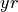
and then these are advected with the flow. At a later time we can (trivally, in this case) invert , and to tell us where, in terms of ,
,  and
and  , the air at any point was at the initialisation time.
, the air at any point was at the initialisation time.
In the case on the LAM domain, the only complication is the lateral boundaries. Since we have no label information outside the domain, we advect in labels that tell us where and when the air entered the domain.
- For the ‘idealised’ bi-periodic domain, the lateral boundaries present a problem. Clearly,
 and
and  (or and ) are not continuous as they wrap around boundaries. Instead we think of the and domain as each consisting of a unit circle. While the angle
(or and ) are not continuous as they wrap around boundaries. Instead we think of the and domain as each consisting of a unit circle. While the angle  is discontinuous around the circle,
is discontinuous around the circle, 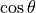
and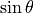
are continuous, so we use these two fields (with angle and
and 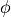
for each horizontal coordinate. Thus 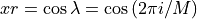
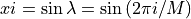
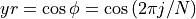
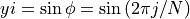
- where
 and are the number of grid points in the and direction respectively. Clearly, and can be recovered from
and are the number of grid points in the and direction respectively. Clearly, and can be recovered from 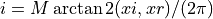
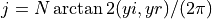
- In the case of the global domain, and would work for longitude if it were not for the poles. Longitude is clearly multi-values at these points. On the other hand, while , is monotonic and continuous at the poles it is discontinuous in gradient. Instead, we use
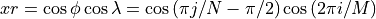
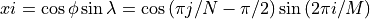
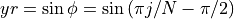
- So:
-
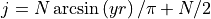
Obtaining label fields from the UM¶
The code to generate and output the Lagrangian labele fields has not (yet) been committed to the UM trunk. It exists as branches in fcm at vn13.0 and vn13.5. Upgrading to later versions should be straightforward. This facility is not yet available in LFRic.
A rose suite will need to build the UM executables with this brnch in the fcm-make app. The suite will also have to make sure that, at run time, both the reconfiguration and UM executables use a STASHmaster that includes:
#
1| 1 | 0 | 700 |Traj_XR |
2| 2 | 0 | 1 | 1 | 2 | 40 | 2 | 0 | 0 | 0 | 0 |
3| 000100000000000000000000000000 | 00000000000000000001 | 3 |
4| 1 | 2 | -99 -99 -99 -99 -99 -99 -99 -99 -99 -99 |
5| 0 | 2100 | 0 | 65 | 0 | 0 | 0 | 0 | 0 |
#
1| 1 | 0 | 701 |Traj_XI |
2| 2 | 0 | 1 | 1 | 2 | 40 | 2 | 0 | 0 | 0 | 0 |
3| 000300000000000000000000000000 | 00000000000000000001 | 3 |
4| 1 | 2 | -99 -99 -99 -99 -99 -99 -99 -99 -99 -99 |
5| 0 | 2101 | 0 | 65 | 0 | 0 | 0 | 0 | 0 |
#
1| 1 | 0 | 702 |Traj_YR |
2| 2 | 0 | 1 | 1 | 2 | 40 | 2 | 0 | 0 | 0 | 0 |
3| 000100000000000000000000000000 | 00000000000000000001 | 3 |
4| 1 | 2 | -99 -99 -99 -99 -99 -99 -99 -99 -99 -99 |
5| 0 | 2102 | 0 | 65 | 0 | 0 | 0 | 0 | 0 |
#
1| 1 | 0 | 703 |Traj_YI |
2| 2 | 0 | 1 | 1 | 2 | 40 | 2 | 0 | 0 | 0 | 0 |
3| 000200000000000000000000000000 | 00000000000000000001 | 3 |
4| 1 | 2 | -99 -99 -99 -99 -99 -99 -99 -99 -99 -99 |
5| 0 | 2103 | 0 | 65 | 0 | 0 | 0 | 0 | 0 |
#
1| 1 | 0 | 704 |Traj_Z |
2| 2 | 0 | 1 | 1 | 2 | 40 | 2 | 0 | 0 | 0 | 0 |
3| 000100000000000000000000000000 | 00000000000000000001 | 3 |
4| 1 | 2 | -99 -99 -99 -99 -99 -99 -99 -99 -99 -99 |
5| 0 | 2104 | 0 | 65 | 0 | 0 | 0 | 0 | 0 |
The UM branches have STASHmasters including this but remember that suites will not use this - they have their own STASHmaster.
This serves two purposes. The first is to tell the reconfiguration about the prognostic fields that need to be set up.
This is only acted upon if the UM app’s have l_trajectories=.true. under the [namelist:run_free_tracers] namelist in their rose-app.conf (or an opt file).
The reconfiguration uses this and the internal model_type variable to decide which prognostics to allocate space to.
The outcome is summarised in the following table.
|
|
|
|
|
|
|---|---|---|---|---|---|
|
Yes |
No |
Yes |
No |
Yes |
|
Yes |
Yes |
Yes |
No |
Yes |
|
Yes |
Yes |
Yes |
No |
Yes |
|
Yes |
Yes |
Yes |
Yes |
Yes |
Note that the recofiguration code (src/control/top_level/tstmsk.F90) actually works with backwards logic, as the reconfiguration allocates space to all section 0 variables unless told not to.
The flag in the fourth position from the left in row 3 of the STASHmaster is actually used in combination with the model_type to determine which variables not to include.
The next step is to output the fields using STASH.
Only those shown as having allocated space in the table above should be output.
They should be output at regular intervals (not including the first timestep).
They should be output using a profile including all -levels including level 0. Take care using previously setup profiles as most variable on -levels are output starting at level 1.
Note
Re-initialisation of the label fields occurs automatically at the first timestep and immediately after STASH has output the fields. No infrmation about the trajectories will be available at intermediate times The longer the interval between outputs, the less accurate the trajectories will be bacause of the increasing complexity o fthe label fields. However, the first consideration should be how much temporal detail is required.
It is recommended that the model orography is output (once) so that the hybrid height coordinate can be used to give the true trajectory height.
The post-processing can cope with UM fieldfiles and pp files (using iris), but it is recommended to output as netcdf files.
Here is an example of a STASH domain for output of a ‘100-level’ model (from levb=0 to levt=100):
[namelist:umstash_domain(thlev0_a715779c)]
dom_name='thlev0'
!!iest=0
ilevs=1
imn=0
imsk=1
!!inth=0
iopa=1
iopl=2
!!isth=0
!!iwst=0
iwt=0
!!l_spml_ts=.false.
levb=0
!!levlst=0
levt=100
plt=0
!!pslist=0
!!rlevlst=0.0
!!spml_bot=0
!!spml_ew=0
!!spml_ns=0
!!spml_top=0
!!tblim=0
!!tblimr=0.0
!!telim=0
!!tnlim=0
ts=.false.
!!tslim=0
!!tsnum=0
!!ttlim=0
!!ttlimr=0.0
!!twlim=0
Here is an exampel of a time domain with output every 15 minutes, not including the first timestep:
[namelist:umstash_time(min15t0_2234fa7d)]
!!iedt=0
iend=-1
ifre=15
!!intv=0
!!ioff=0
iopt=1
!!isam=0
!!isdt=0
!!iser=0
istr=0
!!itimes=0
ityp=1
lts0=.false.
tim_name='min15T0'
!!unt1=2
!!unt2=2
unt3=5
Here is an example of a NetCdf output stream called ‘nct’ and a STASH usage profile that uses it:
[namelist:nlstcall_nc(nct)]
file_id='nct'
filename_base='$DATAM/${RUNID}a_pt%N.nc'
l_compress=.false.
!!l_shuffle=.true.
!!nccomp_level=1
!!packing=0
reinit_end=-1
reinit_start=0
reinit_step=6
reinit_unit=1
[namelist:umstash_use(nc_t_a4aabbef)]
file_id='nct'
locn=3
!!macrotag=0
use_name='nc_t'
Finally, a STASH request for just one label field:
[!namelist:umstash_streq(00700_1d31907f)]
dom_name='thlev0'
isec=0
item=700
package=''
tim_name='min15T0'
use_name='nc_t'
Repeat as necessary!
References¶
Mixed Offline/Online Trajectories and Object-Tracking for Process Research, Peter A. Clark, Leif Denby, Georgios A. Efstathiou, Tom L. Webb and Vishnu Nair, Submitted to JAMES, in review.